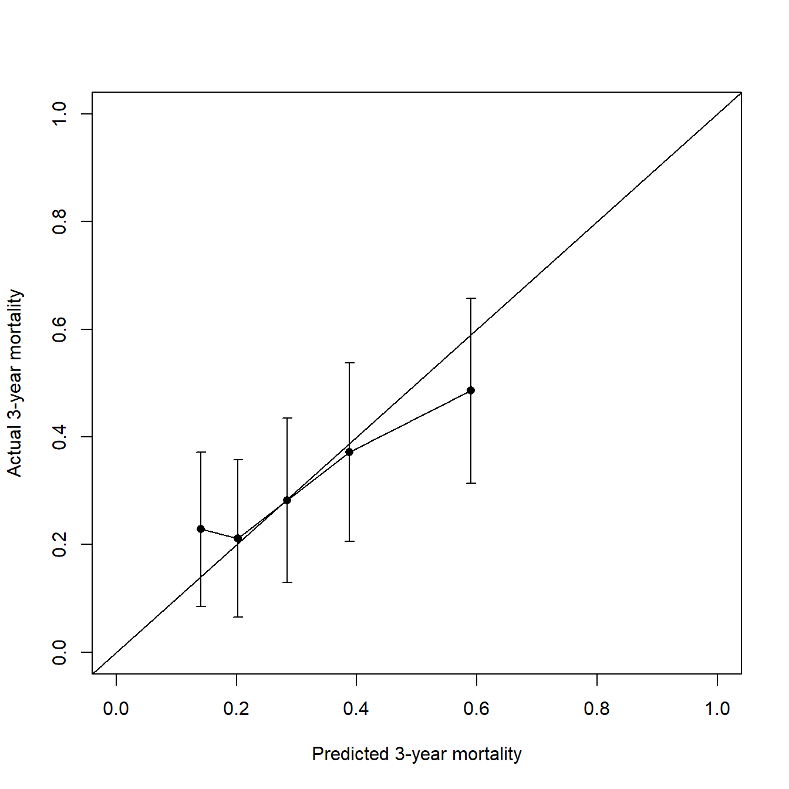
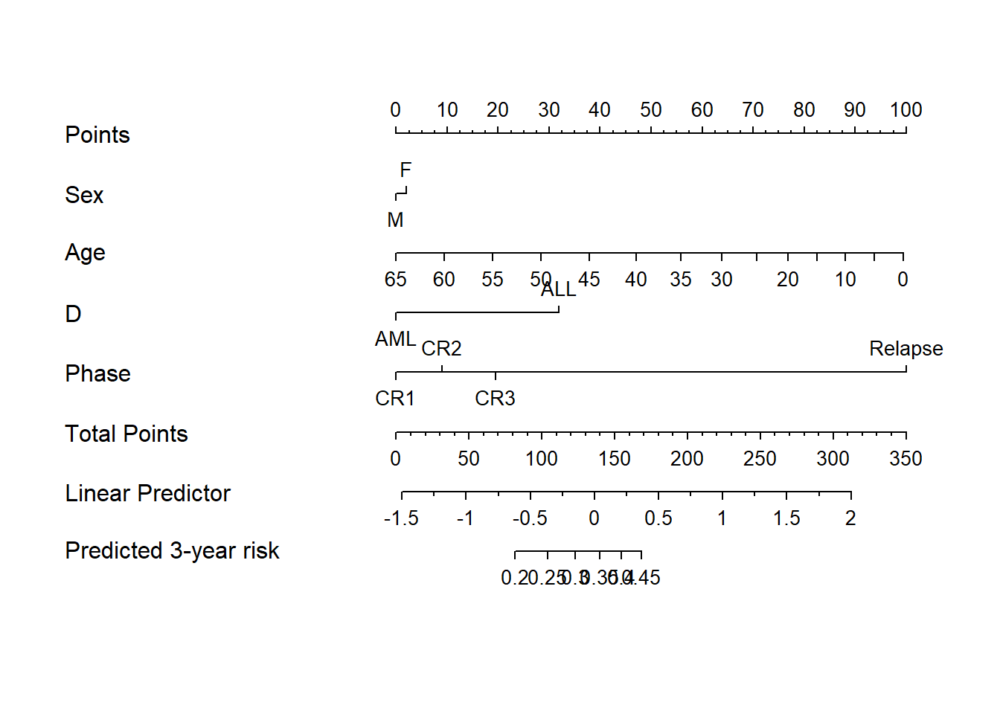
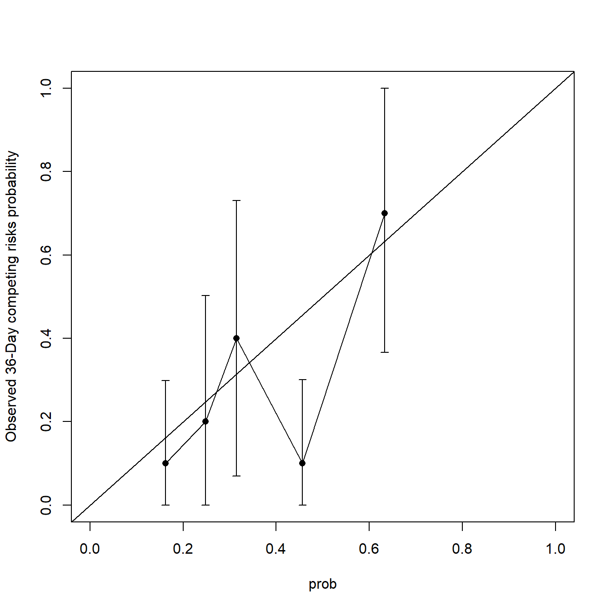

devtools::install_github("ClevelandClinicQHS/QHScrnomo")
install.packages("QHScrnomo")38 竞争风险模型的校准曲线
之前介绍过一次竞争风险模型：Fine-Gray检验、竞争风险模型、列线图绘制。
主要是借助cmprsk这个包实现的，并且列线图的绘制也是间接实现的。
今天介绍的QHScrnomo依赖于rms，cmprsk,Hmisc等包，是专门用于竞争风险模型的列线图绘制，除此之外还可以建立模型、绘制校准曲线、进行内外部验证等。
38.1 安装
2选1：
38.2 准备数据
使用casebase中的bmtcrr数据，只使用其中的一部分，并且把字符型变成因子型。
library(QHScrnomo)
## Warning: package 'QHScrnomo' was built under R version 4.2.3
## Loading required package: rms
## Loading required package: Hmisc
## Loading required package: lattice
## Loading required package: survival
## Loading required package: Formula
## Loading required package: ggplot2
## Warning: package 'ggplot2' was built under R version 4.2.3
##
## Attaching package: 'Hmisc'
## The following objects are masked from 'package:base':
##
## format.pval, units
## Loading required package: SparseM
##
## Attaching package: 'SparseM'
## The following object is masked from 'package:base':
##
## backsolve
data("bmtcrr",package = "casebase")
bmtcrr[,c(1,2,3,6)] <- lapply(bmtcrr[,c(1,2,3,6)],as.factor)
str(bmtcrr)
## 'data.frame': 177 obs. of 7 variables:
## $ Sex : Factor w/ 2 levels "F","M": 2 1 2 1 1 2 2 1 2 1 ...
## $ D : Factor w/ 2 levels "ALL","AML": 1 2 1 1 1 1 1 1 1 1 ...
## $ Phase : Factor w/ 4 levels "CR1","CR2","CR3",..: 4 2 3 2 2 4 1 1 1 4 ...
## $ Age : int 48 23 7 26 36 17 7 17 26 8 ...
## $ Status: int 2 1 0 2 2 2 0 2 0 1 ...
## $ Source: Factor w/ 2 levels "BM+PB","PB": 1 1 1 1 1 1 1 1 1 1 ...
## $ ftime : num 0.67 9.5 131.77 24.03 1.47 ...38.3 拟合竞争风险模型
先使用rms拟合cox回归模型，这几个变量只是我随便挑选的，可能并不是完全适合~
dd <- datadist(bmtcrr)
options(datadist = "dd")
fit <- cph(Surv(ftime,Status == 1) ~ Sex + rcs(Age,3)+D+Phase, data = bmtcrr,
x = TRUE, y= TRUE, surv=TRUE, time.inc = 24)拟合好之后再使用crr.fit变为竞争风险模型，其实是借助了cmprsk::crr：
crr <- crr.fit(fit = fit, cencode = 0, failcode = 1)
class(crr)
## [1] "cmprsk" "crr"
summary(crr)
## Effects Response : Surv(ftime, Status == 1)
##
## Factor Low High Diff. Effect S.E. Lower 0.95 Upper 0.95
## Age 20 40 20 -0.337350 0.23489 -0.79772 0.12303
## Hazard Ratio 20 40 20 0.713660 NA 0.45035 1.13090
## Sex - F:M 2 1 NA 0.022279 0.28692 -0.54007 0.58463
## Hazard Ratio 2 1 NA 1.022500 NA 0.58271 1.79430
## D - ALL:AML 2 1 NA 0.363100 0.29546 -0.21599 0.94219
## Hazard Ratio 2 1 NA 1.437800 NA 0.80575 2.56560
## Phase - CR1:Relapse 4 1 NA -1.135800 0.37803 -1.87670 -0.39488
## Hazard Ratio 4 1 NA 0.321160 NA 0.15309 0.67376
## Phase - CR2:Relapse 4 2 NA -1.034200 0.35885 -1.73750 -0.33084
## Hazard Ratio 4 2 NA 0.355520 NA 0.17596 0.71832
## Phase - CR3:Relapse 4 3 NA -0.914910 0.58559 -2.06260 0.23282
## Hazard Ratio 4 3 NA 0.400550 NA 0.12712 1.26220可以用方差分析看看各个系数的显著性：
anova(crr)
## Wald Statistics Response: Surv(ftime, Status == 1)
##
## Factor Chi-Square d.f. P
## Sex 0.01 1 0.9381
## Age 2.25 2 0.3238
## Nonlinear 0.04 1 0.8510
## D 1.51 1 0.2191
## Phase 14.70 3 0.0021
## TOTAL 19.86 7 0.005938.4 内部验证
建立好模型之后，可以用tenf.crr对验证集进行交叉验证，查看感兴趣时间点的预测结果(死亡概率)，就相当于内部验证。
# 默认10折交叉验证
set.seed(123)
bmtcrr$preds.tenf <- tenf.crr(crr, time = 36, trace = FALSE)#可以计算线性预测值，可查看帮助文档
str(bmtcrr$preds.tenf)
## num [1:177] 0.485 0.171 0.284 0.299 0.206 ...结果是第36个月时，各个病人的死亡风险，而且是考虑到了竞争风险事件的。
38.5 计算C-index
基于上面计算出的概率，计算cindex：
cindex(prob = bmtcrr$preds.tenf,
fstatus = bmtcrr$Status,
ftime = bmtcrr$ftime,
type = "crr",
failcode = 1, cencode = 0
)
## N n usable concordant cindex
## 177.0000000 177.0000000 8249.0000000 5092.0000000 0.6172869cindex=0.617，说明模型一般。
38.6 校准曲线
也是基于上面计算出的cindex。
groupci(x = bmtcrr$preds.tenf,
ftime = bmtcrr$ftime,
fstatus = bmtcrr$Status,
g = 5, # 分成几组
u = 36, # 时间点
failcode = 1,
xlab = "Predicted 3-year mortality",
ylab = "Actual 3-year mortality"
)
## x n events ci std.err
## [1,] 0.1408630 36 8 0.2286706 0.07313371
## [2,] 0.2021363 35 7 0.2114286 0.07429595
## [3,] 0.2841367 36 10 0.2822421 0.07775400
## [4,] 0.3876848 35 14 0.3714286 0.08458920
## [5,] 0.5899486 35 17 0.4857143 0.08757744这个其实就是内部验证的校准曲线了，看起来还不错，因为是在训练集中，训练集的校准曲线其实说明不了任何问题。
如果你觉得不好看可以使用给出的数据自己画，或者直接自己计算也可。可信区间是95%CI，可以通过pred.ci计算的。
38.7 列线图
建立列线图，和rms包的使用一模一样：
nomogram.crr(
fit = crr,
failtime = 36,
lp = T,
xfrac = 0.65,
fun.at = seq(0.2, 0.45, 0.05),
funlabel = "Predicted 3-year risk"
)
38.8 生成模型方程
可以直接给出某个时间点的线性预测值的计算方程：
sas.cmprsk(crr,time = 36)
## Base failure probability by time = 36 is 0.3308
## - 0.022279144 * (Sex = "M") - 0.012796928 * Age -
## 6.6881995e-06 * max(Age - 15.6, 0)**3 + 1.140514e-05 * max(Age -
## 29, 0)**3 - 4.7169407e-06 * max(Age - 48, 0)**3 - 0.36310183 *
## (D = "AML") + 0.10164664 * (Phase = "CR2") + 0.22089946 *
## (Phase = "CR3") + 1.1358137 * (Phase = "Relapse")38.9 外部验证（测试集）
直接predict即可：
test_df <- head(bmtcrr,50)#取前50个作为测试集
prob <- predict(crr, time = 36, newdata = test_df)
head(prob)
## [1] 0.4344841 0.2052952 0.3610625 0.2712397 0.2336076 0.6261795有了概率又可以计算cindex了：
cindex(prob = prob,
fstatus = test_df$Status,
ftime = test_df$ftime
)
## N n usable concordant cindex
## 50.0000000 50.0000000 630.0000000 454.0000000 0.7206349还可以绘制校准曲线：
groupci(x = prob,
ftime = test_df$ftime,
fstatus = test_df$Status,
u = 36,
g = 5
)
## x n events ci std.err
## [1,] 0.1619231 10 1 0.1 0.1013889
## [2,] 0.2478567 10 2 0.2 0.1545392
## [3,] 0.3141252 10 4 0.4 0.1683094
## [4,] 0.4561951 10 1 0.1 0.1023904
## [5,] 0.6326698 10 7 0.7 0.1702254是不是很easy呢。
38.10 参考资料
- https://github.com/ClevelandClinicQHS/QHScrnomo
- vignette(“QHScrnomo”)